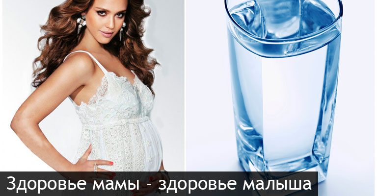

Жизнь на земле зародилась благодаря появлению воды. Именно она стала поистине строительным материалом для жизни. Прошли миллиарды лет, многое изменилось, но представление о том, что вода – это жизнь, осталось прежним.
С эволюцией человека требования к качеству жизни становятся выше. Если раньше человека заботило наличие постоянного источника воды в принципе, то сейчас нам важно не только наличие, но и качество потребляемой воды. Это важно для всех людей, а для женщины, внутри которой зарождается жизнь, вдвойне.
Во время всей беременности женщина запасает воду. Она крайне необходима плоду: его здоровое развитие напрямую связано с нормальным получением полезной жидкости. С увеличением срока беременности увеличивается и объем околоплодных вод, а также объем крови женщины.
Поэтому к тому, что пить во время беременности, нужно отнестись более чем серьезно. Правильнее всего, чтобы 2/3 выпиваемой жидкости в день была чистая негазированная вода. Ведь малыш, находясь внутри мамы, состоит из воды на 90%!
После рождения ребенок начинает питаться грудным молоком. Это ценнейший продукт для развития малыша, потому что в его состав входят все необходимые витамины, микроэлементы и питательные вещества. Но их содержание в грудном молоке невелико – около 13%. Все остальное – вода. Именно поэтому потреблять качественную воду нужно и во время кормления.
Если ребенок находится на грудном вскармливании, то смеси также следует готовить на идеально чистой воде. Современные технологии очистки позволяют безопасно потреблять воду в сыром виде без кипячения. Вода в таком случае будет абсолютно безвредна и для кормления грудных детей.
При выборе системы очистки воды для будущей мамы и ребенка следует обращать внимание на то, чтобы фильтр мог с легкостью справляться с опасными загрязнениями: тяжелыми металлами, железом, хлором, микроорганизмами, бактериями, нитратами и пестицидами. Также фильтр должен «уметь» делать воду полезной, благодаря блокам восстановления. Только в таком случае система очистки воды будет служить на благо здоровьявсей семьи!
Телефоны для консультации, заказа фильтра или станции водоподготовки, выезда специалистов на дом для анализа качества питьевой воды: